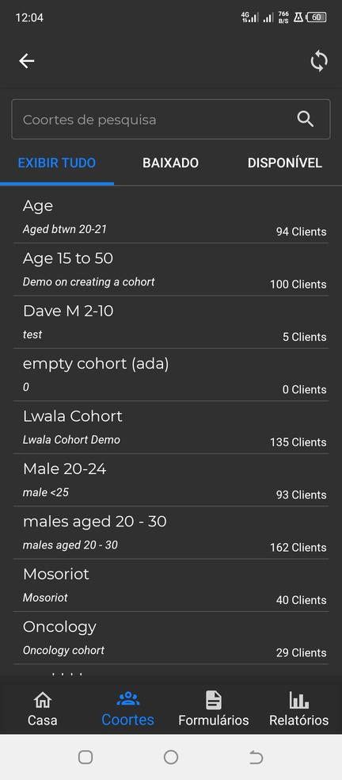
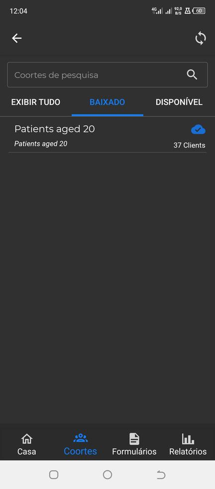
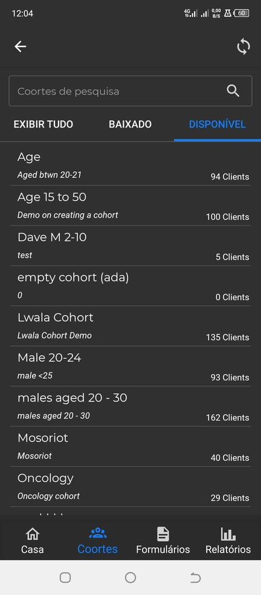
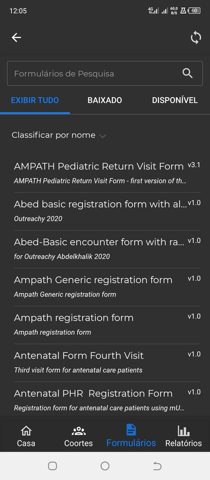
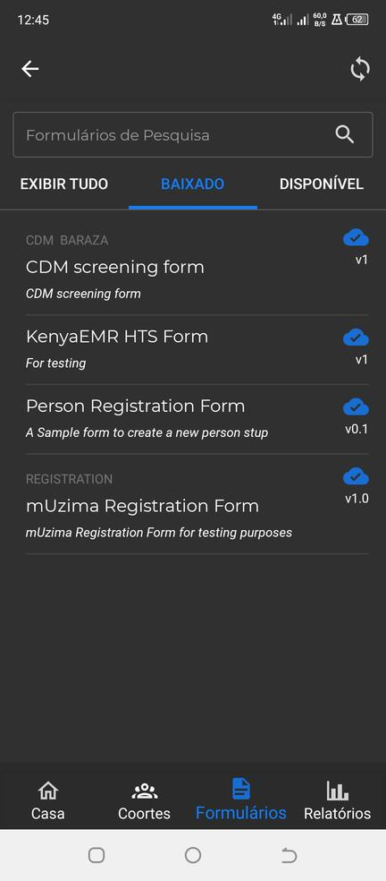
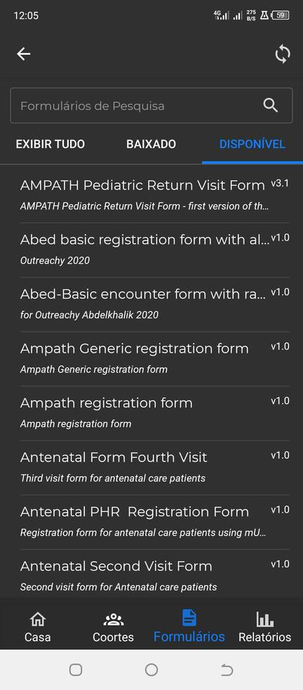

- Esta é a página exibida quando um profissional de saúde faz login no programa mUzima.
- Esta página tem uma configuração para exibir a lista de clientes de acordo com as coortes baixadas do servidor.
- O profissional de saúde pode filtrar essa lista de acordo com a(s) coorte(s) de pacientes que desejar.
- Da mesma forma, um profissional de saúde pode pesquisar um paciente na lista de pacientes usando seu nome no campo Localizar paciente.
- Além disso, esta página tem um botão de registro do paciente caso o profissional de saúde precise registrar o paciente.
- Formulários incompletos são fornecidos em uma área nesta página para informar ao profissional de saúde sobre a presença desses formulários.
- Da mesma forma, os formulários não sincronizados recebem uma seção nesta página para informar ao médico sobre a existência desses formulários.
- MOSTRAR TODAS a guia Esta guia lista todos os grupos de pacientes nas guias DOWNLOADED e AVAILABLE ONLINE.
- guia BAIXADOS Esta guia lista os grupos de pacientes baixados no aplicativo mUzima.
- Guia DISPONÍVEL ONLINE


O profissional de saúde pode baixar a(s) coorte(s) desejada(s) nesta guia selecionando o coorte(s) clique no ícone de download que aparece no canto superior direito da tela

- MOSTRAR TODAS a guia Esta guia lista os formulários nas guias BAIXADO e DISPONÍVEL ONLINE.
- guia BAIXADOS Esta aba lista os formulários baixados no programa mUzima
- Guia DISPONÍVEL ONLINE


O profissional de saúde pode baixar os formulários necessários por meio desta guia selecionando o(s) formulário(s) clique no ícone de download que aparece no canto superior direito da tela

Esta página lista os relatórios de desempenho dos profissionais de saúde. Esses relatórios podem ser baixados do lado do servidor.